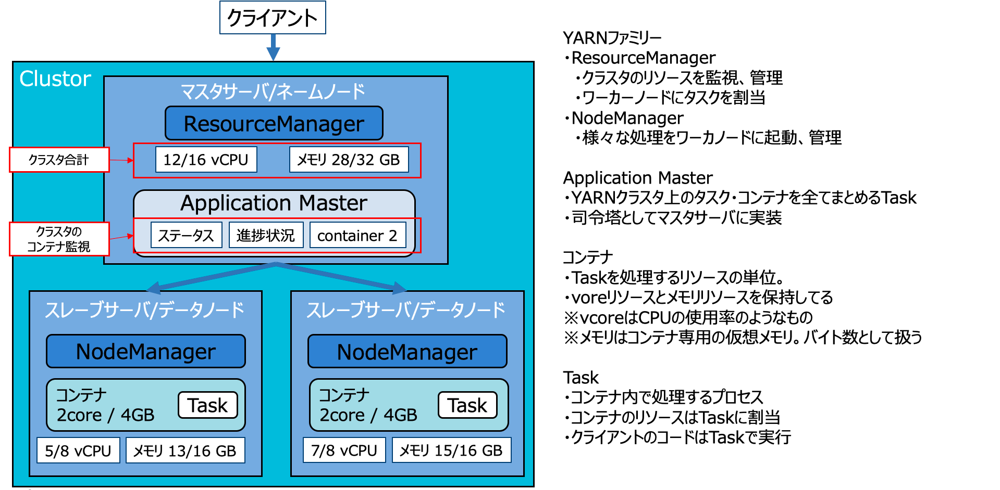

YARNとは
YARNについて
本章ではYARNについてを説明します。YARNとは以下の通りになります。
- YARNはYet-Another-Resource-Negotiatorの略称
- Hadoopエコシステムのためのリソース管理マネージャ
- サーバ数台のメモリやCPUなどリソース要求ハンドリングなど、リソースオーケストレーションを行う分散サービス
こちらについてもう少し詳しく説明します。 YARNファミリーのそれぞれの役割、およびHadoopクラスタの位置付けを図で示すとこのようになります。
YARNファミリー
- ResourceManager
- クラスタのリソースを監視、管理
- ワーカーノードにタスクを割当
- NodeManager
- 様々な処理をワーカノードに起動、管理
Application Master
- YARNクラスタ上のタスク・コンテナを全てまとめるTask
- 司令塔としてマスタサーバに実装
コンテナ
- Taskを処理するリソースの単位。
- voreリソースとメモリリソースを保持してる >vcoreはCPUの使用率のようなもの。メモリはコンテナ専用の仮想メモリ。バイト数として扱う
Task
- コンテナ内で処理するプロセス
- コンテナのリソースはTaskに割当
- クライアントのコードはTaskで実行

YARNを使ったアプリケーション実行の流れについて
上記説明通り、YARNを利用するとResourceManager、NodeManagerの配置が実施されます。このような体制でクライアントからアプリケーションを起動してみます。すると以下の流れでYARN処理が実施されます。
- クライアントにて MapReduce、Sparkなどアプリケーションを実行
- マスタサーバ/ネームノード側でResourceManagerが受け取り、AppllicationMasterへ仲介指示
- ApplicationMaster側がアプリケーションを実行するためにはどれほどかのリソースを確認（＝DAG）
- ApplicationMaster側がResourceManager側へ処理に必要なコンテナ（単位）の割当を依頼
- ResourceManager側はコンテナ（単位）を受け取り、NodeManagerそれぞれへリソース配布
- NodeManagerにて処理に必要なタスクをそれぞれ実施
- NodeManagerにて処理が行き詰ったり問題が出たらResourceManagerへ通知し、その分のコンテナ(単位）を別のNodeManagerへ割当（またはコンテナ(単位)を増やすなど調整）
- NodeManagerで持ちTask処理が終わればResourceManagerへ通知
- 全てのNodeManagerの処理が終われば、アプリケーション結果をクライアントに返してアプリケーション終了

TensorFlow on YARN
AlibabaCloud E-MapReduceにTensorFlow on YARNがあります。こちらはApache Hadoo上で分散型機械学習を運用するために開発されたフレームワークです。YARNのリソース管理やコンテナ構築などのタスク処理を応用した、TensorFlowのジョブをHadoopクラスタに割り当てて分散処理を実現します。同時に、スケジューリングや種類に応じたリソース要求処理、メモリの割当調整ができます。
より詳しくはこちらのドキュメントを参照してください。
* Native Support of TensorFlow on Hadoop
https://engineering.linkedin.com/blog/2018/09/open-sourcing-tony--native-support-of-tensorflow-on-hadoop
* An Orchestrator for Distributed Machine Learning Jobs
https://arxiv.org/abs/1904.01631
まとめ
YARNはHadoopやSparkなど大規模なJob分散処理において欠かせない存在となっています。今後、TensorFlow on YARNのようにYARNは様々な分野で活躍していきますので、YARNの存在意義を理解いただければ幸いです。